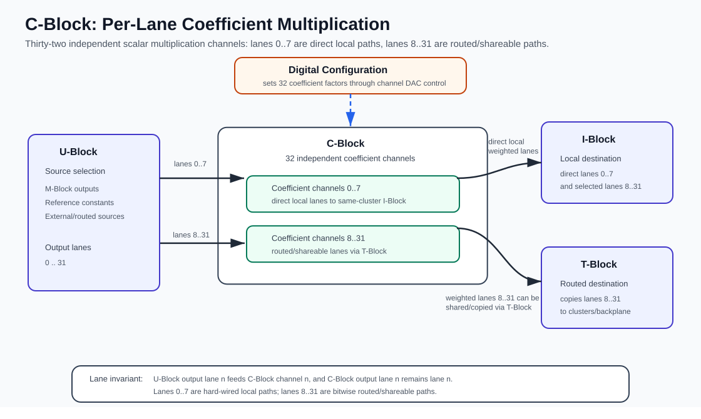

C-Block¶
The C-Block is the coefficient block of a cluster. It applies programmable scalar weights to analog lane signals after source selection in the U-Block and before the signal is consumed locally by the I-Block or routed further through the T-Block.
In the cluster signal chain, the C-Block sits between the U-Block and the downstream lane fabric:
- The U-Block selects which source voltage appears on each lane.
- The C-Block scales each selected lane by an independently configured coefficient.
- Lanes
0..7are direct local coefficient lanes from the C-Block to the same cluster I-Block. - Lanes
8..31can be selected by the T-Block for local use, sharing with other clusters, or backplane routing.
Hardware Role¶
The C-Block implements 32 independent coefficient channels. Each channel belongs to one analog lane and performs scalar multiplication on the voltage present on that lane.
For example :
* Lane 0 is processed by coefficient channel 0.
* Lane 1 is processed by coefficient channel 1.
This one-to-one mapping continues through lane 31 and coefficient channel 31, Each channel receives one analog input, applies its configured coefficient, and drives the corresponding analog output lane.
The block does not select the signal source and does not choose the destination. Source selection is handled by the U-Block, and destination selection is handled by the I-Block and routing fabric.
Conceptually, every channel computes:
where n is a lane index in the range 0..31.
Coefficient Channels¶
Each coefficient channel contains the MDACs(Multiplying DACs) required to multiply an incoming lane voltage by a configured factor.
- The analog input is the lane voltage arriving from the U-Block.
- A digitally programmed coefficient controls the gain and sign applied to that lane.
- The analog output is the scaled version of the same lane.
- The channel is lane-local; it does not cross-connect one lane to another.
- All 32 channels can be configured independently, so different lanes can carry different weighted contributions at the same time.
The C-Block is therefore a per-lane weighting stage, not a crossbar. It changes signal amplitude and polarity, while the neighboring routing blocks decide where signals come from and where they go.
Coefficient Range¶
In pybrid, each C-Block channel is represented as a scalar multiplication element with a factor value.
- The normal coefficient range is
-1.0..+1.0. +1.0passes the lane with unity gain.-1.0passes the lane with inverted unity gain.0.0suppresses the lane contribution.- Intermediate values apply proportional scaling.
Each coefficient is set with 12-bit resolution over a hardware range of about ±1.1, which gives a step size of about 5.4e-4.
Calibration stores two corrections per lane in addition to the programmed factor:
- a gain correction, which must lie between
0and1.1; - an offset correction, which must lie within
±0.05.
Both are applied automatically whenever the coefficients are written to the hardware.
Some higher-level routing helpers can handle larger requested weights by enabling downstream upscaling and reducing the stored C-Block coefficient accordingly. Direct C-Block programming should use values in the supported coefficient range.
Relationship to U-Block, I-Block, and T-Block¶
The C-Block preserves the lane identity established by the U-Block. It does not choose a source or destination; it only applies the configured coefficient to the signal already present on each lane.
- The U-Block places a selected source voltage on output lane
n. - C-Block channel
nmultiplies that lane voltage by coefficientn. - The weighted result remains on lane
nafter leaving the C-Block.
Downstream connectivity depends on the lane range:
- Lanes
0..7are direct local paths from the C-Block to the same cluster I-Block. They provide guaranteed same-cluster weighted inputs without using T-Block routing resources. - Lanes
8..31enter the selectable routing fabric. They can be consumed by the same cluster, shared with another cluster, or exchanged through the backplane. - T-Block routing is lane-preserving for lanes
8..31: a destination lanenselects among available source lanensignals from the clusters or the backplane.
This arrangement is a deliberate system-level connectivity tradeoff. The first eight lanes are reserved for predictable local coefficient paths, while the remaining 24 lanes provide the flexible interconnect needed for cross-cluster and carrier-level routing.
Because the coefficient is applied before routing, a shareable C-Block output can be copied to multiple destinations when they need the same weighted signal. The C-Block computes the coefficient once on the source lane, and the routing fabric distributes that already weighted voltage to the selected destinations.

Example Signal Flow¶
A typical local weighted connection follows this path:
- An M-Block output produces an analog source voltage.
- The U-Block connects that source to one selected output lane.
- The C-Block channel with the same lane index multiplies the voltage by the configured coefficient.
- The I-Block connects the scaled lane to an M-Block input.
- The target M-Block input receives the weighted contribution.
For lanes 0..7, this path is a direct local path from the C-Block to the same cluster I-Block. For lanes 8..31, the local destination is selected through the same routed lane fabric that can also connect other clusters or the backplane.
A typical non-local weighted connection follows this path:
- The source cluster uses its U-Block to place the source voltage on a selected lane.
- The source cluster C-Block scales that lane by the configured coefficient.
- The T-Block routing fabric carries the scaled lane toward another cluster or carrier.
- The destination cluster I-Block connects the incoming lane to the target M-Block input.
Only lanes 8..31 participate in this non-local sharing path. The lane index stays bitwise aligned through the route, so a destination lane 17 receives a selected source lane 17 signal.
A typical copied weighted connection follows this path:
- The source cluster uses its U-Block and C-Block to create one weighted lane signal.
- The T-Block selects the same shareable lane for more than one destination.
- Multiple target clusters or backplane outputs receive the same weighted voltage.
- This saves C-Block coefficient resources when all destinations need the same coefficient.
A typical constant-weighted contribution follows this path:
- The U-Block enables one of the reference-voltage constants.
- The U-Block connects the reserved constant source to a selected lane.
- The C-Block applies the desired coefficient to that constant voltage.
- The I-Block or routing fabric delivers the weighted constant to the destination.
Programming with pybrid¶
The C-Block is available on a cluster as cluster.cblock.
Reset the C-Block¶
reset() resets all 32 coefficient elements to their default scalar multiplication configuration. In pybrid, the default coefficient factor is 1.0.
Set a Coefficient Directly¶
Each coefficient channel is exposed as one element in cluster.cblock.elements.
For example, this configures lane 12 with a coefficient of -0.5:
The lane index is in the range 0..31. Direct C-Block assignment accepts factors in the range -1.0..+1.0; values outside this range raise ValueError. Direct assignment does not enable I-Block upscaling automatically.
Program a Cluster Route¶
For connections within one cluster, the convenience helper configures U-Block, C-Block, and I-Block together:
This performs the following steps:
cluster.ublock.connect(m_out, u_out)selects the source for the lane.cluster.cblock.elements[u_out].factor = c_factorassigns the coefficient to the same lane. Ifabs(c_factor) > 1.0,cluster.route()storesc_factor / 8.0instead and enablescluster.iblock.upscaling[u_out]. Values withabs(c_factor) > 8.0raiseValueError. The I-Block upscaling factor is about10in hardware, so the requested weight is only reached after gain calibration, which applies a gain correction of about0.8to the lane. Before calibration, an upscaled lane runs about 25 % too high.cluster.iblock.connect(u_out, m_in)connects the scaled lane to the target M-Block input.
For example:
This routes M-Block output source 3 to lane 12, scales it by -0.5, and connects the result to M-Block input 7.
For factors outside the direct C-Block range -1.0..+1.0, the effective weight may be implemented using I-Block upscaling plus a reduced stored C-Block factor. See the I-Block page for why such lanes need gain calibration.
When u_out is in 0..7, this uses one of the local direct lanes. When u_out is in 8..31, the lane belongs to the routed/shareable lane range, but cluster.route() itself still only configures this cluster's U-Block, C-Block, and I-Block. It does not program T-Block or cross-cluster routing.
Add a Weighted Constant¶
The cluster helper can inject a U-Block constant and route it through the C-Block and I-Block:
For example:
This enables the selected constant source, places it on lane 4, applies coefficient 0.25, and connects the result to M-Block input 2.
Internally, add_constant() calls cluster.ublock.set_constant(constant_value), selects U-Block input 15 for lanes 0..15 or input 14 for lanes 16..31, then delegates to cluster.route(...). This emits a warning because enabling constants replaces the corresponding B-group inputs and may prevent some later connections.
Valid constant values are -1.0, -0.1, 0, +0.1, and +1.0. True means +1.0, while False or 0 disables the constant. Since add_constant() delegates to cluster.route(), the same C-Block range and I-Block upscaling behavior for c_factor applies.